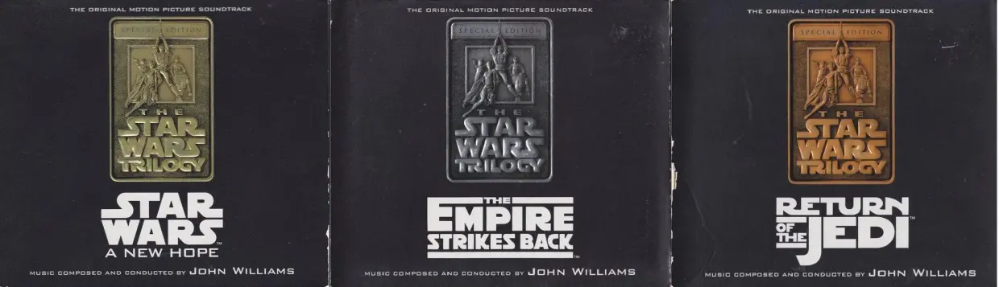

I've always loved storytelling and especially filmmaking, so I've always wanted to be involved in audio/visual art. And although filmmaking is a difficult field to get into, I've always been gifted in math and logic, and after taking a video game design course in high school, I realized I could combine my love for stories with my skillset to tell stories through video games. And if that doesn't work out, there's a massive demand for people with programming skills and not too many people to fulfil that, so I should always be able to find a good paying job if I look hard enough.
I do want to make at least one film in my life though, and I have a story that I've been working on for 7 years now that I'm really proud of, and hopefully one day I'll be able to make it happen.
As I said, I love movies and video games, stuff like Star Wars, Harry Potter, and Lord of the Rings especially. I like to make gaming videos on YouTube in my free time, which for now has always been a hobby, but if I can get monetized it would be a great way to make money on the side from home so I can spend time with my future family.
I also love music, especially insrumental scores to films and games. The opening fanfare to Star Wars alone made me want to play trumpet, and I've been doing that for over 10 years. I love to collect music and if I have 5 dollars to spare you can bet I'll probably spend it on a new soundtrack. Some of my personal favorites are the complete extended scores to the Star Wars original trilogy and the recent deluxe editions of How To Train Your Dragon 1 & 2 (The Hidden World doesn't have a complete release yet, something that's common in film music that I have a particular pet peeve about.)
